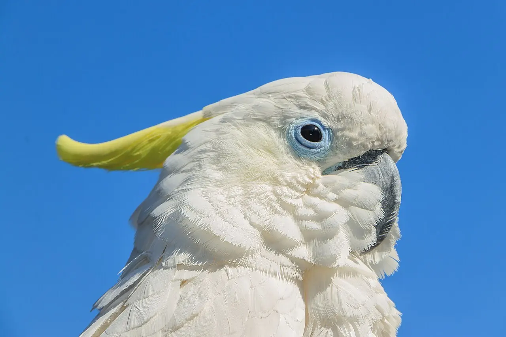
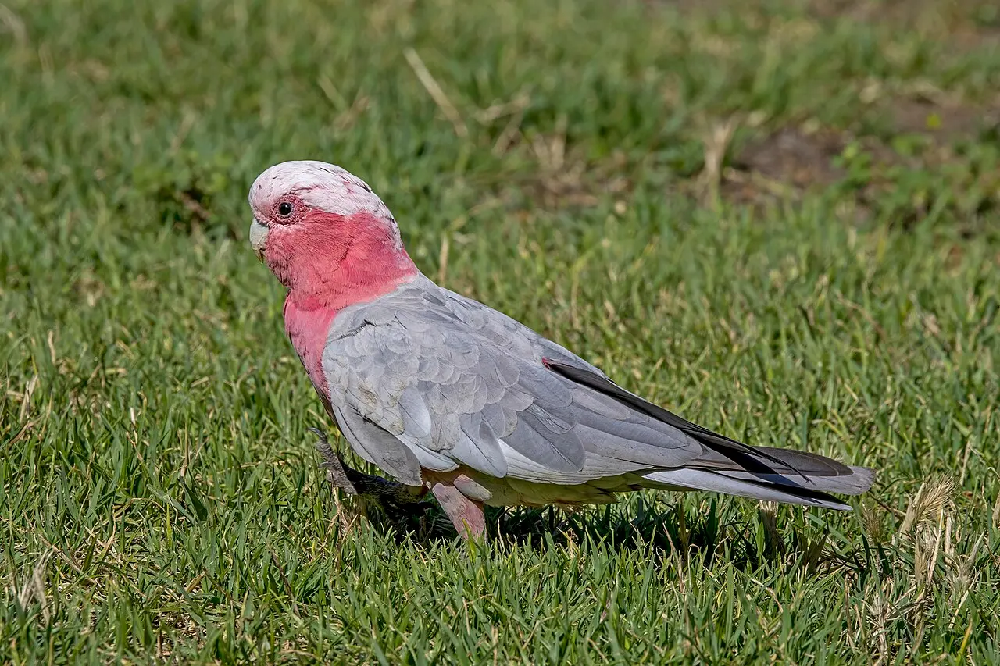

Módulo 7 Aula 28
Quem são as cacatuas
Bem-vindo à especialização. As cacatuas são papagaios com crista, quase todas da Austrália e da Nova Guiné. Nesta aula, o mapa da família.
- O que é uma cacatua e onde elas vivem
- Como a família se divide em gêneros
- Como uma cacatua se distingue de outros papagaios

Ave da aula
Cacatua-de-crista-amarela Cacatua galerita
A família
é o nome comum de qualquer uma das 21 espécies de papagaios com crista da família Cacatuidae, encontradas na Austrália, na Nova Guiné e nas ilhas Salomão[1]. Algumas espécies vivem também na Indonésia, e a lista da base Birds of the World traz 22 espécies em sete gêneros[2]. A diferença de contagem vem de classificações diferentes.
Elas fazem parte da ordem Psittaciformes, a mesma dos papagaios e das araras que você viu na aula 5[3]. Muitas são brancas, pretas, cinza ou rosadas, com uma crista que pode ser levantada[1].
Os gêneros
Um reúne espécies parecidas. A lista do Birds of the World distribui as cacatuas assim: Cacatua (13 espécies), Zanda (3), Calyptorhynchus (2) e um de cada em Nymphicus, Probosciger, Callocephalon e Eolophus[2]. Escolha um exemplo de cada.

Zanda (3 espécies)
Exemplo: cacatua-negra-de-cauda-amarela, Zanda funerea
Grande cacatua de plumagem quase toda preta, com a maior parte das penas do corpo com bordas amarelas[7].

Calyptorhynchus (2 espécies)
Exemplo: cacatua-negra-de-cauda-vermelha, Calyptorhynchus banksii
Preta e brilhante, com uma crista erétil que forma uma espécie de capacete quando levantada e empurrada para a frente[8].


Eolophus (1 espécie)
Galah, Eolophus roseicapilla
A lista do Birds of the World mostra um só representante deste gênero[2]. Na foto, repare no peito rosado e no dorso cinza.

Callocephalon (1 espécie)
Gang-gang, Callocephalon fimbriatum
Também um gênero de uma só espécie[2]. O macho, na foto, tem a cabeça vermelha.
Cacatua x outros papagaios
Cacatuas são papagaios, mas com traços próprios. Quase todas têm crista e bico forte, para quebrar sementes e nozes[1]. O bico, como nos outros papagaios, tem a parte de cima móvel, presa ao crânio por uma dobradiça[3]. E, como veremos na aula 30, elas têm penas de pó bem desenvolvidas[1].
Palavras novas
Teste rápido
Sem nota. Se errar, tente de novo.
Em que região vivem as cacatuas, em geral?
Qual é a menor cacatua?
O que a maioria das cacatuas tem na cabeça?
Referências e leitura complementar
Onde conferir o que foi dito nesta aula. Os números entre colchetes no texto levam a estas fontes. Os links abrem em outra aba.
- CockatooEncyclopaedia Britannica · inglêsVisão geral: distribuição, crista, plumagem e diferenças em relação a outros papagaios.
- Cacatuidae – CockatoosBirds of the World · Cornell Lab of Ornithology · inglês · leitura complementarA família das cacatuas, com as espécies reconhecidas.
- PsittaciformEncyclopaedia Britannica · inglêsA ordem dos papagaios e seus parentes, incluindo as cacatuas.
- Sulphur-crested CockatooAustralian Museum · inglêsFicha da cacatua-de-crista-amarela: tamanho, hábitat, alimentação e ninho.
- CockatielEncyclopaedia Britannica · inglêsA calopsita: a menor cacatua, nativa da Austrália.
- Palm cockatooEncyclopaedia Britannica · inglês · leitura complementarFicha da cacatua-de-palmeira.
- Yellow-tailed Black-CockatooAustralian Museum · inglês · leitura complementarFicha da cacatua-negra-de-cauda-amarela.
- Red-tailed Black-CockatooAustralian Museum · inglês · leitura complementarFicha da cacatua-negra-de-cauda-vermelha, com crista erétil.
Os endereços foram abertos e conferidos em 29/09/2026. Alguns sites de revistas científicas e de órgãos oficiais exigem verificação humana e não puderam ser testados por robô. Sites externos podem mudar ou sair do ar.
Para levar
Em três frases
- As cacatuas formam a família Cacatuidae, de 21 a 22 espécies, dependendo da classificação.
- Vivem na Austrália, na Nova Guiné, nas ilhas Salomão e em ilhas da Indonésia e das Filipinas; a calopsita é a menor.
- Quase todas têm crista, um traço que as distingue de muitos outros papagaios.